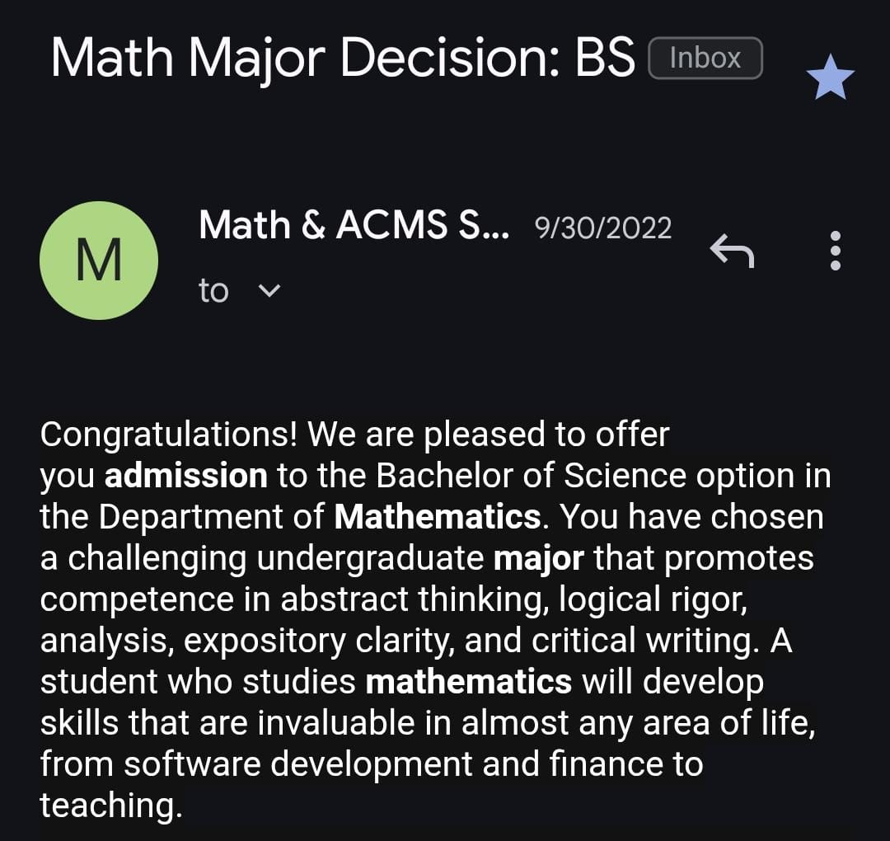
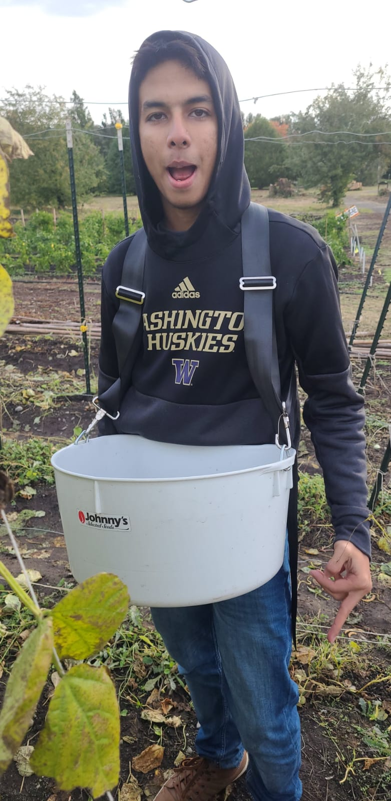

A double Major Honors Student?
Right before I started sophomore year I got into the CS Major, Math Major and the Honors Program.
This marked the start of a period where I would try to figure how everything would work out,
going to career fairs at the Allen School building, attending advanced math classes,
and exploring the interdisciplinary honors committee.

A volunteer?
As part of Honors 394, I worked on the UW Farm for all of Autumn Quarter. My roommate and I had fun
working with other volunteers, learned a TON about the Farm and the surrounding land,
and yes… we broke a few rules regarding horseplay (oops).
A Mathematician?
These were my first hard classes at UW: the second year of the accelerated advanced honors calculus program.
We wrote haikus on the Banach fixed point theorem, proved seminal theorems in analysis by ourselves,
and bonded as the class shrank from 40 to 15.
A good friend?
This was my most social year by far—making new friend groups across all UW communities,
attending events, hanging out, and having the best time.
An overloaded student?
Spring quarter saw three classes clashing in the same time slot, multiple days a week.
Time-conflict forms, make-up sessions, surprise homework—it was chaos, but I survived!
A musical artist?
I recorded an album based on UW locations—soundtrack for an imaginary Pokémon-style game set on campus.
Wrote, recorded, mixed, and played ukulele plus kalimba.
Happy?
My final paper for Math 33X (writing credit!)—a mathematical treatment of maximizing happiness.
Very on-brand for my optimistic sophomore outlook.